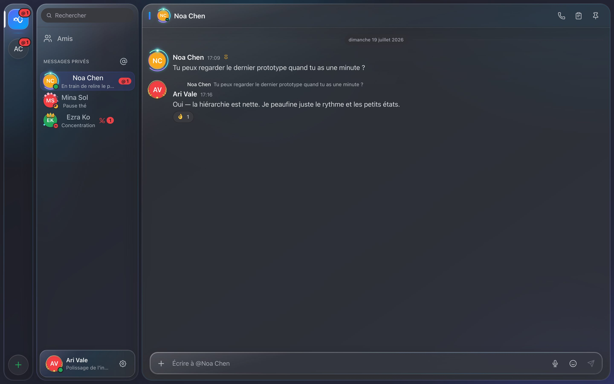

💬
Messages, réactions, fils, réponses
Messages privés et serveurs à salons, réactions emoji, fils de discussion, réponses citées, mentions, épingles, sondages, recherche instantanée sur tout l'historique. L'édition Markdown va jusqu'aux tableaux et à la coloration du code.
